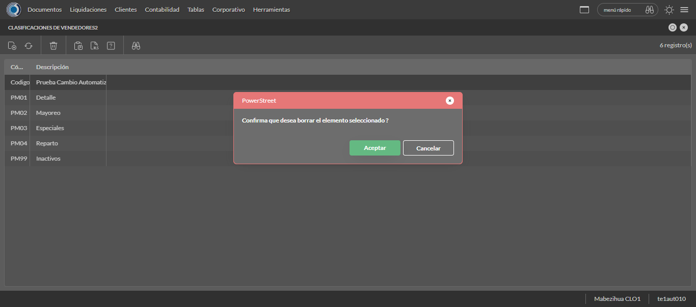

Desarrollado por : Area de Testing PWST
Fecha y hora de inicio : 2022-10-25 14:53:04
Duracion : 0:32:45.558111
Resultado : Total 43，Correctos 43 ，Taza de resultado 100.00%
Resumen 100.00% Errores 0 Fallidos 0 Correctos 43 Test realizados 43
| Caso de Prueba | Total | Correctos | Fallido | Error | Detalles | Captura del error |
| ScriptAmarillo.Test: Script Amarillo | 43 | 43 | 0 | 0 | Detalles | |
test |
pt1_1: 2022-10-25 14:53:05,436 - root - INFO - Se abre el chrome
2022-10-25 14:53:06,527 - root - INFO - Entra a la URL
2022-10-25 14:53:06,660 - root - INFO - Maximiza la pantalla
2022-10-25 14:53:09,714 - root - INFO - Cambia al frame
|
|
||||
test_000: Ingresa a la base de datos |
pt1_2: 2022-10-25 14:53:12,861 - root - INFO - Escribe el usuario
2022-10-25 14:53:12,997 - root - INFO - Escribe la contraseña
2022-10-25 14:53:13,163 - root - INFO - Se dio clic en el boton ingresar
2022-10-25 14:53:13,923 - root - INFO - Ejecutar Enterprise
2022-10-25 14:53:17,992 - root - INFO - Cambia entre pestañas
|
|
||||
test_001: Ingresa a pantalla Modelos de liquidación |
pt1_3: 2022-10-25 14:53:46,044 - root - INFO - Abre la pantalla de Modelos Liquidación
2022-10-25 14:53:46,114 - root - INFO - La pantalla ejecutada es Modelos Liquidacion.
2022-10-25 14:53:49,115 - root - INFO - Captura: C:\xampp\htdocs\versiones\automatizaciones\AutoPWST\ScriptAmarillo\report\img screen：20221025_14_53_49.png
2022-10-25 14:53:49,312 - root - INFO - Se presiona el boton 'Nuevo', para crear un nuevo registro.
|
|||||
test_002: Agregar Modelos de liquidación |
pt1_4: 2022-10-25 14:53:54,387 - root - INFO - Se abrio la pantalla para el ingreso de un registro nuevo.
2022-10-25 14:53:54,453 - root - INFO - Ingresa el codigo del nuevo registro
2022-10-25 14:53:57,688 - root - INFO - Ingresa la descripción del nuevo registro
2022-10-25 14:54:00,804 - root - INFO - Ingresa la cantidad de días del nuevo registro
2022-10-25 14:54:03,962 - root - INFO - Ingresa la cantidad maxima del nuevo registro
2022-10-25 14:54:14,447 - root - INFO - Se dió doble click en el registro de Lista Precio.
2022-10-25 14:54:24,906 - root - INFO - Se dió doble click en el registro de Codigo Modelo.
2022-10-25 14:54:33,035 - root - INFO - Se movió la pantalla hacia abajo.
2022-10-25 14:54:38,139 - root - INFO - Se dió click en el checkbox Mostrar Advertencias.
2022-10-25 14:54:41,249 - root - INFO - Se dió click en el checkbox Cierre Liquidacion Carga Definitiva.
2022-10-25 14:54:44,347 - root - INFO - Se dió click en el checkbox Quitar Documentos.
2022-10-25 14:54:47,454 - root - INFO - Se dió click en el checkbox Inhibir Operaciones.
2022-10-25 14:54:50,565 - root - INFO - Se dió click en el checkbox Cerrar Liquidaciones Vacias.
2022-10-25 14:54:53,675 - root - INFO - Se dió click en el checkbox Inhibir Carga.
2022-10-25 14:54:56,803 - root - INFO - Se dió click en el checkbox Solicitar Fecha Cierre.
2022-10-25 14:54:59,914 - root - INFO - Se dió click en el checkbox Ignorar Errores.
2022-10-25 14:55:03,059 - root - INFO - Ingresa el la fecha desde del nuevo registro
2022-10-25 14:55:11,485 - root - INFO - Se dió click en el botón Hoy para seleccionar la fecha Actual.
2022-10-25 14:55:19,923 - root - INFO - Se dió click en el botón Hoy para seleccionar la fecha Actual.
2022-10-25 14:55:30,355 - root - INFO - Se dió click en la opción de Carga precios y politcas.
2022-10-25 14:55:33,364 - root - INFO - Captura: C:\xampp\htdocs\versiones\automatizaciones\AutoPWST\ScriptAmarillo\report\img screen：20221025_14_55_33.png
2022-10-25 14:55:33,560 - root - INFO - Se da clic en el boton Guardar; se debe crear un nuevo registro.
|
|||||
test_003: Modifica Modelos de liquidación |
pt1_5: 2022-10-25 14:55:38,662 - root - INFO - Se presiona el boton 'Refrescar', para proceder a modificar el registro.
2022-10-25 14:55:48,283 - root - INFO - Se da clic en el registro creado, para proceder a modificarlo.
2022-10-25 14:55:53,539 - root - INFO - Se modifica el contenido del campo Descripción
2022-10-25 14:55:56,700 - root - INFO - Se modifica el contenido del campo Cantidad de Días
2022-10-25 14:55:59,852 - root - INFO - Se modifica el contenido del campo Cantidad Maxima
2022-10-25 14:56:10,306 - root - INFO - Se dió doble click en el registro de Lista Precio.
2022-10-25 14:56:20,832 - root - INFO - Se dió doble click en el registro de Codigo Modelo.
2022-10-25 14:56:31,000 - root - INFO - Se movió la pantalla hacia abajo.
2022-10-25 14:56:34,113 - root - INFO - Se dió click en el checkbox Mostrar Advertencias.
2022-10-25 14:56:37,213 - root - INFO - Se dió click en el checkbox Cierre Liquidacion Carga Definitiva.
2022-10-25 14:56:40,316 - root - INFO - Se dió click en el checkbox Quitar Documentos.
2022-10-25 14:56:43,426 - root - INFO - Se dió click en el checkbox Inhibir Operaciones.
2022-10-25 14:56:46,537 - root - INFO - Se dió click en el checkbox Cerrar Liquidaciones Vacias.
2022-10-25 14:56:49,624 - root - INFO - Se dió click en el checkbox Inhibir Carga.
2022-10-25 14:56:52,711 - root - INFO - Se dió click en el checkbox Ignorar Errores.
2022-10-25 14:57:03,120 - root - INFO - Se dió click en la opción de Carga precios y politcas.
2022-10-25 14:57:17,796 - root - INFO - Se dió click en la opción de Hasta.
2022-10-25 14:57:20,802 - root - INFO - Captura: C:\xampp\htdocs\versiones\automatizaciones\AutoPWST\ScriptAmarillo\report\img screen：20221025_14_57_20.png
2022-10-25 14:57:20,999 - root - INFO - Se da clic en el boton Guardar; se debe modificar la informacion del registro.
|
|||||
test_004: Elimina Modelos de liquidación |
pt1_6: 2022-10-25 14:57:26,070 - root - INFO - Se presiona el boton 'Refrescar', para proceder a eliminar el registro.
2022-10-25 14:57:35,647 - root - INFO - Se da clic en el registro creado, para proceder a eliminarlo.
2022-10-25 14:57:40,740 - root - INFO - Se presiona el boton 'Eliminar', para eliminar el registro.
2022-10-25 14:57:45,752 - root - INFO - Captura: C:\xampp\htdocs\versiones\automatizaciones\AutoPWST\ScriptAmarillo\report\img screen：20221025_14_57_45.png
2022-10-25 14:57:45,992 - root - INFO - Se confirma el eliminado del registro
2022-10-25 14:57:51,069 - root - INFO - Se presiona el boton 'Refrescar', para verificar si el registro ha sido eliminado.
2022-10-25 14:57:56,150 - root - INFO - Se presiona el boton 'Cerrar', para cerrar la pantalla de Modelos Liquidación.
|
|||||
test_005: Ingresa a pantalla Tipo de Vendedor |
pt1_7: 2022-10-25 14:58:09,058 - root - INFO - Abre la pantalla Tipos Vendedor
2022-10-25 14:58:09,120 - root - INFO - La pantalla ejecutada es Tipos de Vendedor
2022-10-25 14:58:12,124 - root - INFO - Captura: C:\xampp\htdocs\versiones\automatizaciones\AutoPWST\ScriptAmarillo\report\img screen：20221025_14_58_12.png
2022-10-25 14:58:12,369 - root - INFO - Se presiona el boton 'Nuevo', para crear un nuevo registro.
|
|||||
test_006: Agregar Tipo de Vendedor |
pt1_8: 2022-10-25 14:58:17,427 - root - INFO - Se abrio la pantalla para el ingreso de un registro nuevo.
2022-10-25 14:58:17,533 - root - INFO - Ingresa el codigo del nuevo registro
2022-10-25 14:58:20,743 - root - INFO - Ingresa el codigo usuario del nuevo registro
2022-10-25 14:58:23,866 - root - INFO - Ingresa el codigo alternativo del nuevo registro
2022-10-25 14:58:27,032 - root - INFO - Ingresa la descripción del nuevo registro
2022-10-25 14:58:30,038 - root - INFO - Captura: C:\xampp\htdocs\versiones\automatizaciones\AutoPWST\ScriptAmarillo\report\img screen：20221025_14_58_30.png
2022-10-25 14:58:30,242 - root - INFO - Se da clic en el boton Guardar; se debe crear un nuevo registro.
|
|||||
test_007: Modifica Tipo de Vendedor |
pt1_9: 2022-10-25 14:58:35,317 - root - INFO - Se presiona el boton 'Refrescar', para proceder a modificar el registro.
2022-10-25 14:58:44,907 - root - INFO - Se da doble click en el registro creado, para proceder a modificarlo.
2022-10-25 14:58:48,112 - root - INFO - Se modifica el contenido del campo Codigo Alternativo
2022-10-25 14:58:51,260 - root - INFO - Se modifica el contenido del campo Codigo Usuario
2022-10-25 14:58:54,408 - root - INFO - Se modifica el contenido del campo Descripcion
2022-10-25 14:58:57,410 - root - INFO - Captura: C:\xampp\htdocs\versiones\automatizaciones\AutoPWST\ScriptAmarillo\report\img screen：20221025_14_58_57.png
2022-10-25 14:58:57,601 - root - INFO - Se da clic en el boton Guardar; se debe modificar la informacion del registro.
|
|||||
test_008: Elimina Tipo de Vendedor |
pt1_10: 2022-10-25 14:59:02,682 - root - INFO - Se presiona el boton 'Refrescar', para proceder a eliminar el registro.
2022-10-25 14:59:12,266 - root - INFO - Se da clic en el registro creado, para proceder a eliminarlo.
2022-10-25 14:59:15,365 - root - INFO - Se presiona el boton 'Eliminar', para eliminar el registro.
2022-10-25 14:59:20,367 - root - INFO - Captura: C:\xampp\htdocs\versiones\automatizaciones\AutoPWST\ScriptAmarillo\report\img screen：20221025_14_59_20.png
2022-10-25 14:59:20,552 - root - INFO - Se confirma el eliminado del registro
2022-10-25 14:59:25,631 - root - INFO - Se presiona el boton 'Refrescar', para verificar si el registro se elimino.
2022-10-25 14:59:30,732 - root - INFO - Se presiona el boton 'Cerrar', para cerrar la pantalla de Tipos Vendedor.
|
|||||
test_009: Ingresa a pantalla Perfiles Móviles |
pt1_11: 2022-10-25 14:59:46,657 - root - INFO - Abre la pantalla de Perfiles Moviles
2022-10-25 14:59:46,724 - root - INFO - La pantalla ejecutada es Perfiles Moviles
2022-10-25 14:59:49,736 - root - INFO - Captura: C:\xampp\htdocs\versiones\automatizaciones\AutoPWST\ScriptAmarillo\report\img screen：20221025_14_59_49.png
2022-10-25 14:59:49,920 - root - INFO - Se presiona el boton 'Nuevo', para crear un nuevo registro.
|
|||||
test_010: Agregar Perfiles Móviles |
pt1_12: 2022-10-25 14:59:54,999 - root - INFO - Se abrio la pantalla para el ingreso de un registro nuevo.
2022-10-25 14:59:55,054 - root - INFO - Ingresa el codigo del nuevo registro
2022-10-25 14:59:58,206 - root - INFO - Ingresa la Descripcion del nuevo registro
2022-10-25 15:00:09,641 - root - INFO - Se selecciono la opción Todas las Rutas
2022-10-25 15:00:12,758 - root - INFO - Ingresa el Tipo documento default del nuevo registro
2022-10-25 15:00:27,650 - root - INFO - Se selecciono la opción Normal
2022-10-25 15:00:39,090 - root - INFO - Se selecciono el registro de Modo carga liquidación
2022-10-25 15:00:50,521 - root - INFO - Se selecciono la opción Documento (carga directa)
2022-10-25 15:00:53,626 - root - INFO - Se dió click en el checkbox Modo PDV
2022-10-25 15:00:56,738 - root - INFO - Se dió click en el checkbox Registrar coordenadas GPS
2022-10-25 15:01:08,191 - root - INFO - Se dió click en la opción No lo toma
2022-10-25 15:01:11,310 - root - INFO - Ingresa el Intervalo lectura coordenadas GPS(min) del nuevo registro
2022-10-25 15:01:14,319 - root - INFO - Captura: C:\xampp\htdocs\versiones\automatizaciones\AutoPWST\ScriptAmarillo\report\img screen：20221025_15_01_14.png
2022-10-25 15:01:17,582 - root - INFO - Se hace el cambio de pestaña Varios para continuar con el registro nuevo
2022-10-25 15:01:22,684 - root - INFO - Se dió click en el checkbox Cargar resumen de cuentas únicamente del vendedor de la ruta
2022-10-25 15:01:25,792 - root - INFO - Se dió click en el checkbox Verificar límite de crédito
2022-10-25 15:01:28,907 - root - INFO - Se dió click en el checkbox Verificar opción 'guardar como' del tipo de documento
2022-10-25 15:01:32,010 - root - INFO - Se dió click en el checkbox Permitir Pagos
2022-10-25 15:01:42,130 - root - INFO - Se dió click en el botón espacio para mover la pantalla hacía abajo
2022-10-25 15:01:53,536 - root - INFO - Se selecciono el registro de Disco de Datos
2022-10-25 15:02:04,931 - root - INFO - Se dió click en la opción Autoventa
2022-10-25 15:02:08,047 - root - INFO - Se dió click en el checkbox Enviar documentos de inmediato al servidor.
2022-10-25 15:02:11,158 - root - INFO - Se hace el cambio a la pestaña Permisos para continuar con el registro nuevo
2022-10-25 15:02:16,276 - root - INFO - Se presiona el boton 'Nuevo de la pestaña Permiso' , para crear un nuevo registro.
2022-10-25 15:02:29,704 - root - INFO - Se dió click en la opción Inihibir Georeferenciación
2022-10-25 15:02:32,815 - root - INFO - Se presiona el boton 'Guardar de la pestaña Permiso', para guardar el registro.
2022-10-25 15:02:37,928 - root - INFO - Se hace el cambio a la pestaña Lineas de Negocio para continuar con el registro nuevo
2022-10-25 15:02:43,029 - root - INFO - Se presiona el boton 'Nuevo de la pestaña Permiso' , para crear un nuevo registro.
2022-10-25 15:02:56,500 - root - INFO - Se selecciono el registro de Linea de negocio
2022-10-25 15:02:59,596 - root - INFO - Se presiona el boton 'Guardar de la pestaña Linea de Negocio', para guardar el registro.
2022-10-25 15:03:04,755 - root - INFO - Se presiona el boton 'Nuevo de la pestaña Permiso' , para crear un nuevo registro.
2022-10-25 15:03:18,228 - root - INFO - Se selecciono el registro de Linea de negocio
2022-10-25 15:03:21,324 - root - INFO - Se presiona el boton 'Guardar de la pestaña Linea de Negocio', para guardar el registro.
2022-10-25 15:03:26,411 - root - INFO - Se presiona el boton 'Nuevo de la pestaña Permiso' , para crear un nuevo registro.
2022-10-25 15:03:39,868 - root - INFO - Se selecciono el registro de Linea de negocio
2022-10-25 15:03:42,959 - root - INFO - Se presiona el boton 'Guardar de la pestaña Linea de Negocio', para guardar el registro.
2022-10-25 15:03:48,073 - root - INFO - Se hace el cambio a la pestaña Impulso Ventas para continuar con el registro nuevo
2022-10-25 15:03:53,197 - root - INFO - Se presiona el boton 'Nuevo de la pestaña Impulso de Ventas' , para crear un nuevo registro.
2022-10-25 15:03:58,298 - root - INFO - Ingresa el Articulo del nuevo registro
2022-10-25 15:04:04,484 - root - INFO - Se presiona el boton 'Guardar de la pestaña Impulso de Ventas', para guardar el registro.
2022-10-25 15:04:09,573 - root - INFO - Se presiona el boton 'Nuevo de la pestaña Impulso de Ventas' , para crear un nuevo registro.
2022-10-25 15:04:14,666 - root - INFO - Ingresa el Articulo del nuevo registro
2022-10-25 15:04:20,871 - root - INFO - Se presiona el boton 'Guardar de la pestaña Impulso de Ventas', para guardar el registro.
2022-10-25 15:04:25,972 - root - INFO - Se presiona el boton 'Nuevo de la pestaña Impulso de Ventas' , para crear un nuevo registro.
2022-10-25 15:04:31,083 - root - INFO - Ingresa el Articulo del nuevo registro
2022-10-25 15:04:37,264 - root - INFO - Se presiona el boton 'Guardar de la pestaña Impulso de Ventas', para guardar el registro.
2022-10-25 15:04:42,372 - root - INFO - Se presiona el boton 'Nuevo de la pestaña Impulso de Ventas' , para crear un nuevo registro.
2022-10-25 15:04:47,483 - root - INFO - Ingresa el Articulo del nuevo registro
2022-10-25 15:04:53,680 - root - INFO - Se presiona el boton 'Guardar de la pestaña Impulso de Ventas', para guardar el registro.
2022-10-25 15:04:58,760 - root - INFO - Se presiona el boton 'Nuevo de la pestaña Impulso de Ventas' , para crear un nuevo registro.
2022-10-25 15:05:03,870 - root - INFO - Ingresa el Articulo del nuevo registro
2022-10-25 15:05:10,073 - root - INFO - Se presiona el boton 'Guardar de la pestaña Impulso de Ventas', para guardar el registro.
2022-10-25 15:05:15,187 - root - INFO - Se hace el cambio a la pestaña Mantenimiento Clientes para continuar con el registro nuevo
2022-10-25 15:05:20,299 - root - INFO - Se dió click en el checkbox Permiso agregar nuevos clientes
2022-10-25 15:05:23,405 - root - INFO - Se dió click en el checkbox Permiso modificar clientes existentes
2022-10-25 15:05:34,905 - root - INFO - Se selecciono el registro de Ruta Referencia
2022-10-25 15:05:38,032 - root - INFO - Se dió click en el checkbox Clasificación 1
2022-10-25 15:05:41,144 - root - INFO - Se dió click en el checkbox Clasificación 2
2022-10-25 15:05:44,267 - root - INFO - Se dió click en el checkbox Clasificación 3
2022-10-25 15:05:47,394 - root - INFO - Se dió click en el checkbox Colonia
2022-10-25 15:05:50,503 - root - INFO - Se dió click en el checkbox Codigo Postal
2022-10-25 15:05:53,642 - root - INFO - Se dió click en el checkbox Direccion
2022-10-25 15:05:56,756 - root - INFO - Se dió click en el checkbox Entorno PDV
2022-10-25 15:05:59,878 - root - INFO - Se dió click en el checkbox Esquina 1
2022-10-25 15:06:02,999 - root - INFO - Se dió click en el checkbox Esquina 2
2022-10-25 15:06:06,115 - root - INFO - Se dió click en el checkbox Paises
2022-10-25 15:06:09,248 - root - INFO - Se dió click en el checkbox Departamento
2022-10-25 15:06:12,364 - root - INFO - Se dió click en el checkbox Localidad
2022-10-25 15:06:15,489 - root - INFO - Se da clic en el boton Guardar; se debe crear un nuevo registro.
|
|||||
test_011: Modifica Perfiles Móviles |
pt1_13: 2022-10-25 15:06:25,587 - root - INFO - Se presiona el boton 'Refrescar', para proceder a modificar el registro.
2022-10-25 15:06:30,288 - root - INFO - Se da clic en el registro creado, para proceder a modificarlo.
2022-10-25 15:06:35,468 - root - INFO - Se modifica el contenido del campo Observaciones 1
2022-10-25 15:06:46,886 - root - INFO - Se selecciono la opción Una Ruta
2022-10-25 15:06:49,891 - root - INFO - Captura: C:\xampp\htdocs\versiones\automatizaciones\AutoPWST\ScriptAmarillo\report\img screen：20221025_15_06_49.png
2022-10-25 15:06:50,089 - root - INFO - Se hace el cambio de pestaña Permisos para continuar con la modificación del registro
2022-10-25 15:06:55,208 - root - INFO - Se presiona el boton 'Nuevo de la pestaña Permiso' , para crear un nuevo registro.
2022-10-25 15:07:08,645 - root - INFO - Se dió click en la opción Anular Documentos
2022-10-25 15:07:11,739 - root - INFO - Se presiona el boton 'Guardar de la pestaña Permiso', para guardar el registro.
2022-10-25 15:07:16,903 - root - INFO - Se hace el cambio a la pestaña Lineas de Negocio para continuar con la modificación del registro
2022-10-25 15:07:22,044 - root - INFO - Se hace el cambio de pestaña Impulso Ventas para continuar con la modificación del registro
2022-10-25 15:07:31,639 - root - INFO - Se da clic en el registro creado, para proceder a modificarlo.
2022-10-25 15:07:39,748 - root - INFO - Se presiona el boton 'Eliminar de Impulso Ventas', para eliminar el primer registro.
2022-10-25 15:07:44,399 - root - INFO - Se da clic en el registro creado, para proceder a modificarlo.
2022-10-25 15:07:52,502 - root - INFO - Se presiona el boton 'Eliminar de Impulso Ventas', para eliminar el segundo registro.
2022-10-25 15:07:57,083 - root - INFO - Se da clic en el registro creado, para proceder a modificarlo.
2022-10-25 15:08:05,168 - root - INFO - Se presiona el boton 'Eliminar de Impulso Ventas', para eliminar el tercer registro.
2022-10-25 15:08:09,775 - root - INFO - Se da clic en el registro creado, para proceder a modificarlo.
2022-10-25 15:08:17,871 - root - INFO - Se presiona el boton 'Eliminar de Impulso Ventas', para eliminar el cuarto registro.
2022-10-25 15:08:22,484 - root - INFO - Se da clic en el registro creado, para proceder a modificarlo.
2022-10-25 15:08:30,608 - root - INFO - Se presiona el boton 'Eliminar de Impulso Ventas', para eliminar el quinto registro.
2022-10-25 15:08:30,703 - root - INFO - Se da clic en el boton Guardar; se debe modificar la informacion del registro.
|

|
||||
test_012: Elimina Perfiles Móviles |
pt1_14: 2022-10-25 15:08:35,793 - root - INFO - Se presiona el boton 'Refrescar', para proceder a eliminar el registro.
2022-10-25 15:08:45,400 - root - INFO - Se da clic en el registro creado, para proceder a eliminarlo.
2022-10-25 15:08:48,508 - root - INFO - Se hace el cambio de pestaña Permisos para continuar con la eliminación del registro
2022-10-25 15:08:58,112 - root - INFO - Se da clic en el primer registro de Permisos, para proceder a eliminarlo.
2022-10-25 15:09:06,224 - root - INFO - Se presiona el boton 'Eliminar de Permiso', para eliminar el segundo registro.
2022-10-25 15:09:10,843 - root - INFO - Se da clic en el segundo registro de Permisos, para proceder a Eliminarlo.
2022-10-25 15:09:18,940 - root - INFO - Se presiona el boton 'Eliminar de Permiso', para eliminar el segundo registro.
2022-10-25 15:09:19,036 - root - INFO - Se hace el cambio a la pestaña Lineas de Negocio para continuar con la eliminación del registro
2022-10-25 15:09:28,634 - root - INFO - Se da clic en el primer registro de Linea de Negocio, para proceder a Eliminarlo.
2022-10-25 15:09:36,751 - root - INFO - Se presiona el boton 'Eliminar de Linea de Negocio', para eliminar el primer registro.
2022-10-25 15:09:41,335 - root - INFO - Se da clic en el segundo registro Linea de negocio, para proceder a Eliminarlo.
2022-10-25 15:09:49,422 - root - INFO - Se presiona el boton 'Eliminar de Linea de Negocio', para eliminar el segundo registro.
2022-10-25 15:09:54,013 - root - INFO - Se da clic en el tercer registro Lineas de Negocio, para proceder a Eliminarlo.
2022-10-25 15:10:02,117 - root - INFO - Se presiona el boton 'Eliminar de Linea de Negocio', para eliminar el tercer registro.
2022-10-25 15:10:02,220 - root - INFO - Se hace el cambio a la pestaña Mantenimiento Clientes para continuar con la eliminación del registro
2022-10-25 15:10:07,346 - root - INFO - Se dió click en el checkbox Clasificación 1
2022-10-25 15:10:10,482 - root - INFO - Se dió click en el checkbox Clasificación 2
2022-10-25 15:10:13,612 - root - INFO - Se dió click en el checkbox Clasificación 3
2022-10-25 15:10:16,729 - root - INFO - Se dió click en el checkbox Colonia
2022-10-25 15:10:19,857 - root - INFO - Se dió click en el checkbox Codigo Postal
2022-10-25 15:10:22,989 - root - INFO - Se dió click en el checkbox Direccion
2022-10-25 15:10:26,123 - root - INFO - Se dió click en el checkbox Entorno PDV
2022-10-25 15:10:29,259 - root - INFO - Se dió click en el checkbox Esquina 1
2022-10-25 15:10:32,400 - root - INFO - Se dió click en el checkbox Esquina 2
2022-10-25 15:10:35,530 - root - INFO - Se dió click en el checkbox Paises
2022-10-25 15:10:38,657 - root - INFO - Se dió click en el checkbox Departamento
2022-10-25 15:10:41,784 - root - INFO - Se dió click en el checkbox Localidad
2022-10-25 15:10:44,907 - root - INFO - Se da clic en el boton Guardar; se debe modificar la informacion del registro.
2022-10-25 15:10:54,500 - root - INFO - Se da clic en el registro creado, para proceder a eliminarlo.
2022-10-25 15:11:02,598 - root - INFO - Se presiona el boton 'Eliminar', para eliminar el registro.
2022-10-25 15:11:02,601 - root - INFO - Captura: C:\xampp\htdocs\versiones\automatizaciones\AutoPWST\ScriptAmarillo\report\img screen：20221025_15_11_02.png
2022-10-25 15:11:02,798 - root - INFO - Se confirma el eliminado del registro
2022-10-25 15:11:07,878 - root - INFO - Se presiona el boton 'Refrescar', para verificar si el registro ha sido eliminado.
2022-10-25 15:11:12,987 - root - INFO - Se presiona el boton 'Cerrar', para cerrar la pantalla de Perfiles Moviles.
|
|||||
test_013: Ingresa a pantalla Clasificación de Vendedor |
pt1_15: 2022-10-25 15:11:26,924 - root - INFO - Abre la pantalla de Clasificación Vendedor
2022-10-25 15:11:26,989 - root - INFO - La pantalla ejecutada es Clasificación Vendedor.
2022-10-25 15:11:30,004 - root - INFO - Captura: C:\xampp\htdocs\versiones\automatizaciones\AutoPWST\ScriptAmarillo\report\img screen：20221025_15_11_30.png
2022-10-25 15:11:30,186 - root - INFO - Se presiona el boton 'Nuevo', para crear un nuevo registro.
|
|||||
test_014: Agregar Clasificación de Vendedor |
pt1_16: 2022-10-25 15:11:35,257 - root - INFO - Se abrio la pantalla para el ingreso de un registro nuevo.
2022-10-25 15:11:35,329 - root - INFO - Ingresa el codigo del nuevo registro
2022-10-25 15:11:38,465 - root - INFO - Ingresa la descripción del nuevo registro
2022-10-25 15:11:41,475 - root - INFO - Captura: C:\xampp\htdocs\versiones\automatizaciones\AutoPWST\ScriptAmarillo\report\img screen：20221025_15_11_41.png
2022-10-25 15:11:41,670 - root - INFO - Se da clic en el boton Guardar; se debe crear un nuevo registro.
|
|||||
test_015: Modifica Clasificación de Vendedor |
pt1_17: 2022-10-25 15:11:46,766 - root - INFO - Se presiona el boton 'Refrescar', para crear un nuevo registro igual al anterior.
2022-10-25 15:11:56,373 - root - INFO - Se da clic en el registro creado, para proceder a modificarlo.
2022-10-25 15:11:59,554 - root - INFO - Se modifica el contenido del campo Descripcion
2022-10-25 15:12:02,569 - root - INFO - Captura: C:\xampp\htdocs\versiones\automatizaciones\AutoPWST\ScriptAmarillo\report\img screen：20221025_15_12_02.png
2022-10-25 15:12:02,756 - root - INFO - Se da clic en el boton Guardar; se debe modificar la informacion del registro.
|
|||||
test_016: Elimina Clasificación de Vendedor |
pt1_18: 2022-10-25 15:12:07,842 - root - INFO - Se presiona el boton 'Refrescar', para proceder a eliminar el registro.
2022-10-25 15:12:17,419 - root - INFO - Se da clic en el registro creado, para proceder a eliminarlo.
2022-10-25 15:12:20,514 - root - INFO - Se presiona el boton 'Eliminar', para eliminar el registro.
2022-10-25 15:12:25,523 - root - INFO - Captura: C:\xampp\htdocs\versiones\automatizaciones\AutoPWST\ScriptAmarillo\report\img screen：20221025_15_12_25.png
2022-10-25 15:12:25,739 - root - INFO - Se confirma el eliminado del registro
2022-10-25 15:12:30,816 - root - INFO - Se presiona el boton 'Refrescar', para crear un nuevo registro igual al anterior.
2022-10-25 15:12:35,931 - root - INFO - Se presiona el boton 'Cerrar', para cerrar la pantalla de Categorias Fiscales.
|
|||||
test_017: Ingresa a pantalla Clasificación de Vendedor 2 |
pt1_19: 2022-10-25 15:12:47,860 - root - INFO - Abre la pantalla de Clasificaciones 2
2022-10-25 15:12:47,917 - root - INFO - La pantalla ejecutada es Clasifiaciones 2
2022-10-25 15:12:50,922 - root - INFO - Captura: C:\xampp\htdocs\versiones\automatizaciones\AutoPWST\ScriptAmarillo\report\img screen：20221025_15_12_50.png
2022-10-25 15:12:51,104 - root - INFO - Se presiona el boton 'Nuevo', para crear un nuevo registro.
|

|
||||
test_018: Agregar Clasificación de Vendedor 2 |
pt1_20: 2022-10-25 15:12:56,169 - root - INFO - Se abrio la pantalla para el ingreso de un registro nuevo.
2022-10-25 15:12:56,243 - root - INFO - Ingresa el codigo del nuevo registro
2022-10-25 15:12:59,383 - root - INFO - Ingresa el codigo usuario del nuevo registro
2022-10-25 15:13:02,518 - root - INFO - Ingresa el codigo alternativo del nuevo registro
2022-10-25 15:13:05,638 - root - INFO - Ingresa la descripción del nuevo registro
2022-10-25 15:13:08,643 - root - INFO - Captura: C:\xampp\htdocs\versiones\automatizaciones\AutoPWST\ScriptAmarillo\report\img screen：20221025_15_13_08.png
2022-10-25 15:13:08,841 - root - INFO - Se da clic en el boton Guardar; se debe crear un nuevo registro.
|
|||||
test_019: Modifica Clasificación de Vendedor 2 |
pt1_21: 2022-10-25 15:13:13,946 - root - INFO - Se presiona el boton 'Refrescar', para crear un nuevo registro igual al anterior.
2022-10-25 15:13:23,564 - root - INFO - Se da clic en el registro creado, para proceder a modificarlo.
2022-10-25 15:13:26,689 - root - INFO - Se modifica el contenido del campo Codigo Alternativo
2022-10-25 15:13:29,858 - root - INFO - Ingresa el codigo usuario del nuevo registro
2022-10-25 15:13:33,048 - root - INFO - Se modifica el contenido del campo Descripcion
2022-10-25 15:13:36,055 - root - INFO - Captura: C:\xampp\htdocs\versiones\automatizaciones\AutoPWST\ScriptAmarillo\report\img screen：20221025_15_13_36.png
2022-10-25 15:13:36,295 - root - INFO - Se da clic en el boton Guardar; se debe modificar la informacion del registro.
|
|||||
test_020: Elimina Clasificación de Vendedor 2 |
pt1_22: 2022-10-25 15:13:41,383 - root - INFO - Se presiona el boton 'Refrescar', para proceder a eliminar el registro.
2022-10-25 15:13:50,973 - root - INFO - Se da clic en el registro creado, para proceder a eliminarlo.
2022-10-25 15:13:59,113 - root - INFO - Se presiona el boton 'Eliminar', para eliminar el registro.
2022-10-25 15:13:59,113 - root - INFO - Captura: C:\xampp\htdocs\versiones\automatizaciones\AutoPWST\ScriptAmarillo\report\img screen：20221025_15_13_59.png
2022-10-25 15:13:59,305 - root - INFO - Se confirma el eliminado del registro
2022-10-25 15:14:04,389 - root - INFO - Se presiona el boton 'Refrescar', para crear un nuevo registro igual al anterior.
2022-10-25 15:14:09,482 - root - INFO - Se presiona el boton 'Cerrar', para cerrar la pantalla de Categorias Fiscales.
|
 | ||||
test_021: Ingresar a la pantalla Objetivos Diarios |
pt1_23: 2022-10-25 15:14:21,408 - root - INFO - Abre la pantalla de Objetivos Diarios
2022-10-25 15:14:21,465 - root - INFO - La pantalla ejecutada es Objetivos Diarios.
2022-10-25 15:14:24,469 - root - INFO - Captura: C:\xampp\htdocs\versiones\automatizaciones\AutoPWST\ScriptAmarillo\report\img screen：20221025_15_14_24.png
2022-10-25 15:14:24,649 - root - INFO - Se presiona el boton 'Nuevo', para crear un nuevo registro.
|
|||||
test_022: Agregar Objetivos Diarios |
pt1_24: 2022-10-25 15:14:29,716 - root - INFO - Se abrio la pantalla para el ingreso de un registro nuevo.
2022-10-25 15:14:37,158 - root - INFO - Se dió doble click en el regitro de Vendedor.
2022-10-25 15:14:47,587 - root - INFO - Se dió click en el Botón hoy para seleccionar la fecha actual.
2022-10-25 15:14:50,705 - root - INFO - Ingresa la efectividad del nuevo registro
2022-10-25 15:14:53,712 - root - INFO - Captura: C:\xampp\htdocs\versiones\automatizaciones\AutoPWST\ScriptAmarillo\report\img screen：20221025_15_14_53.png
2022-10-25 15:14:53,918 - root - INFO - Se hace el cambio a la pestaña Grupos para continuar con el registro nuevo
2022-10-25 15:14:57,015 - root - INFO - Se presiona el boton 'Nuevo', para crear un nuevo registro de Grupos.
2022-10-25 15:15:09,491 - root - INFO - Se dió doble click en el regitro de Grupos Politica.
2022-10-25 15:15:17,946 - root - INFO - Se dió click en la opción Volumen Mensual.
2022-10-25 15:15:26,386 - root - INFO - Se dió click en la opción Unidad.
2022-10-25 15:15:29,524 - root - INFO - Ingresa el Objetivo Cantidad del nuevo registro
2022-10-25 15:15:32,637 - root - INFO - Se da clic en el boton Guardar; se debe crear un nuevo registro de Grupos.
2022-10-25 15:15:37,746 - root - INFO - Se da clic en el boton Guardar; se debe crear un nuevo registro.
|
|||||
test_023: Modifica Objetivos Diarios |
pt1_25: 2022-10-25 15:15:42,884 - root - INFO - Se presiona el boton 'Refrescar', para proceder a modificar el registro.
2022-10-25 15:15:52,498 - root - INFO - Se da doble click en el registro creado, para proceder a modificarlo.
2022-10-25 15:15:55,662 - root - INFO - Se modifica el contenido del campo efectividad
2022-10-25 15:15:58,673 - root - INFO - Captura: C:\xampp\htdocs\versiones\automatizaciones\AutoPWST\ScriptAmarillo\report\img screen：20221025_15_15_58.png
2022-10-25 15:15:58,869 - root - INFO - Se hace el cambio a la pestaña Grupos para continuar con la Modificación del registro
2022-10-25 15:16:06,490 - root - INFO - Se da doble click en el registro de Grupos, para proceder a modificarlo.
2022-10-25 15:16:16,959 - root - INFO - Se dió doble click en el registro de Grupos Politica.
2022-10-25 15:16:25,373 - root - INFO - Se dió click en la opción Volumen Mensual.
2022-10-25 15:16:33,824 - root - INFO - Se dió click en la opción Unidad.
2022-10-25 15:16:37,002 - root - INFO - Se modifica el contenido del campo Objetivo Cantidad
2022-10-25 15:16:40,102 - root - INFO - Se da clic en el boton Guardar; se debe modificar el registro de Grupos.
2022-10-25 15:16:45,203 - root - INFO - Se da clic en el boton Guardar; se debe modificar la informacion del registro.
|

|
||||
test_024: Elimina Objetivos Diarios |
pt1_26: 2022-10-25 15:16:50,282 - root - INFO - Se presiona el boton 'Refrescar', para proceder a eliminar el registro.
2022-10-25 15:16:59,876 - root - INFO - Se da clic en el registro creado, para proceder a eliminarlo.
2022-10-25 15:17:02,974 - root - INFO - Se presiona el boton 'Eliminar', para eliminar el registro.
2022-10-25 15:17:07,978 - root - INFO - Captura: C:\xampp\htdocs\versiones\automatizaciones\AutoPWST\ScriptAmarillo\report\img screen：20221025_15_17_07.png
2022-10-25 15:17:08,179 - root - INFO - Se confirma el eliminado del registro
2022-10-25 15:17:13,265 - root - INFO - Se presiona el boton 'Refrescar', para verificar que el registro ha sido eliminado.
2022-10-25 15:17:18,374 - root - INFO - Se presiona el boton 'Cerrar', para cerrar la pantalla de Objetivos Diarios.
|
|||||
test_025: Ingresar a la pantalla PopUps |
pt1_27: 2022-10-25 15:17:32,323 - root - INFO - Abre la pantalla de PopUps
2022-10-25 15:17:32,390 - root - INFO - La pantalla ejecutada es PopUps.
2022-10-25 15:17:35,401 - root - INFO - Captura: C:\xampp\htdocs\versiones\automatizaciones\AutoPWST\ScriptAmarillo\report\img screen：20221025_15_17_35.png
2022-10-25 15:17:35,609 - root - INFO - Se presiona el boton 'Nuevo', para crear un nuevo registro.
|
|||||
test_026: Agregar PopUps |
pt1_28: 2022-10-25 15:17:40,686 - root - INFO - Se abrio la pantalla para el ingreso de un registro nuevo.
2022-10-25 15:17:40,764 - root - INFO - Ingresa el codigo del nuevo registro
2022-10-25 15:17:43,890 - root - INFO - Ingresa la orden del nuevo registro
2022-10-25 15:17:55,108 - root - INFO - Hizo click en el checkbox Activo
2022-10-25 15:17:58,305 - root - INFO - Ingresa la descripción del nuevo registro
2022-10-25 15:18:08,751 - root - INFO - Se dió click en la opción Pantalla Held.
2022-10-25 15:18:19,199 - root - INFO - Se dió doble click en el registro de Tipo Pop Up.
2022-10-25 15:18:22,375 - root - INFO - Ingresa el texto del nuevo registro
2022-10-25 15:18:25,386 - root - INFO - Captura: C:\xampp\htdocs\versiones\automatizaciones\AutoPWST\ScriptAmarillo\report\img screen：20221025_15_18_25.png
2022-10-25 15:18:25,588 - root - INFO - Se da clic en el boton Guardar; se debe crear un nuevo registro.
|
|||||
test_027: Modifica PopUps |
pt1_29: 2022-10-25 15:18:30,696 - root - INFO - Se presiona el boton 'Refrescar', para proceder a modificar el registro.
2022-10-25 15:18:40,925 - root - INFO - Se dió dos veces click en el encabezado para modificar el orden de los registros.
2022-10-25 15:18:53,581 - root - INFO - Se da clic en el registro creado, para proceder a modificarlo.
2022-10-25 15:18:53,813 - root - INFO - Se modifica el contenido del campo Orden
2022-10-25 15:19:01,988 - root - INFO - Hizo click en el checkbox activo
2022-10-25 15:19:05,234 - root - INFO - Se modifica el contenido del campo Descripción
2022-10-25 15:19:15,654 - root - INFO - Se dió click en la opción Ambos.
2022-10-25 15:19:26,149 - root - INFO - Se dió doble click en el registro de Tipo PopUp.
2022-10-25 15:19:29,378 - root - INFO - Se modifica el contenido del campo Texto
2022-10-25 15:19:32,382 - root - INFO - Captura: C:\xampp\htdocs\versiones\automatizaciones\AutoPWST\ScriptAmarillo\report\img screen：20221025_15_19_32.png
2022-10-25 15:19:32,615 - root - INFO - Se da clic en el boton Guardar; se debe modificar la informacion del registro.
|
|||||
test_028: Elimina PopUps |
pt1_30: 2022-10-25 15:19:40,724 - root - INFO - Se presiona el boton 'Refrescar', para proceder a eliminar el registro.
2022-10-25 15:19:53,337 - root - INFO - Se da clic en el registro creado, para proceder a eliminarlo.
2022-10-25 15:19:58,447 - root - INFO - Se presiona el boton 'Eliminar', para eliminar el registro.
2022-10-25 15:19:58,450 - root - INFO - Captura: C:\xampp\htdocs\versiones\automatizaciones\AutoPWST\ScriptAmarillo\report\img screen：20221025_15_19_58.png
2022-10-25 15:19:58,664 - root - INFO - Se confirma el eliminado del registro
2022-10-25 15:20:03,760 - root - INFO - Se presiona el boton 'Refrescar', para veriicar si el registro ha sido eliminado.
2022-10-25 15:20:08,868 - root - INFO - Se presiona el boton 'Cerrar', para cerrar la pantalla de Pop Ups.
|
|||||
test_029: Ingresar a la pantalla Tipos PopUps |
pt1_31: 2022-10-25 15:20:20,812 - root - INFO - Abre la pantalla de Tipos de PopUp
2022-10-25 15:20:20,876 - root - INFO - La pantalla ejecutada es Tipos de PopUp.
2022-10-25 15:20:23,883 - root - INFO - Captura: C:\xampp\htdocs\versiones\automatizaciones\AutoPWST\ScriptAmarillo\report\img screen：20221025_15_20_23.png
2022-10-25 15:20:24,086 - root - INFO - Se presiona el boton 'Nuevo', para crear un nuevo registro.
|
|||||
test_030: Agregar Tipos PopUps |
pt1_32: 2022-10-25 15:20:29,168 - root - INFO - Se abrio la pantalla para el ingreso de un registro nuevo.
2022-10-25 15:20:29,274 - root - INFO - Ingresa el codigo del nuevo registro
2022-10-25 15:20:32,414 - root - INFO - Ingresa el codigo alternativo del nuevo registro
2022-10-25 15:20:35,548 - root - INFO - Ingresa la descripción del nuevo registro
2022-10-25 15:20:38,562 - root - INFO - Captura: C:\xampp\htdocs\versiones\automatizaciones\AutoPWST\ScriptAmarillo\report\img screen：20221025_15_20_38.png
2022-10-25 15:20:38,740 - root - INFO - Se da clic en el boton Guardar; se debe crear un nuevo registro.
|
|||||
test_031: Modifica Tipos PopUps |
pt1_33: 2022-10-25 15:20:43,845 - root - INFO - Se presiona el boton 'Refrescar', para proceder a modificar el registro.
2022-10-25 15:20:53,469 - root - INFO - Se da clic en el registro creado, para proceder a modificarlo.
2022-10-25 15:20:56,630 - root - INFO - Se modifica el contenido del campo Codigo Alternativo
2022-10-25 15:20:59,816 - root - INFO - Se modifica el contenido del campo Descripcion
2022-10-25 15:21:02,828 - root - INFO - Captura: C:\xampp\htdocs\versiones\automatizaciones\AutoPWST\ScriptAmarillo\report\img screen：20221025_15_21_02.png
2022-10-25 15:21:03,057 - root - INFO - Se da clic en el boton Guardar; se debe modificar la informacion del registro.
|
|||||
test_032: Elimina Tipos PopUps |
pt1_34: 2022-10-25 15:21:08,135 - root - INFO - Se presiona el boton 'Refrescar', para proceder a eliminar el registro.
2022-10-25 15:21:17,726 - root - INFO - Se da clic en el registro creado, para proceder a eliminarlo.
2022-10-25 15:21:20,817 - root - INFO - Se presiona el boton 'Eliminar', para eliminar el registro.
2022-10-25 15:21:25,831 - root - INFO - Captura: C:\xampp\htdocs\versiones\automatizaciones\AutoPWST\ScriptAmarillo\report\img screen：20221025_15_21_25.png
2022-10-25 15:21:26,036 - root - INFO - Se confirma el eliminado del registro
2022-10-25 15:21:31,122 - root - INFO - Se presiona el boton 'Refrescar', para verificar que el registro se elimino.
2022-10-25 15:21:36,217 - root - INFO - Se presiona el boton 'Cerrar', para cerrar la pantalla de Tipos PopUp.
|

|
||||
test_033: Ingresar a la pantalla WorksFlow |
pt1_35: 2022-10-25 15:21:48,143 - root - INFO - Abre la pantalla de Worksflow
2022-10-25 15:21:48,201 - root - INFO - La pantalla ejecutada es Work Flows
2022-10-25 15:21:51,204 - root - INFO - Captura: C:\xampp\htdocs\versiones\automatizaciones\AutoPWST\ScriptAmarillo\report\img screen：20221025_15_21_51.png
2022-10-25 15:21:51,400 - root - INFO - Se presiona el boton 'Nuevo', para crear un nuevo registro.
|
|||||
test_034: Agregar WorksFlow |
pt1_36: 2022-10-25 15:21:56,469 - root - INFO - Se abrio la pantalla para el ingreso de un registro nuevo.
2022-10-25 15:21:56,553 - root - INFO - Ingresa el codigo del nuevo registro
2022-10-25 15:21:59,717 - root - INFO - Ingresa la descripción del nuevo registro
2022-10-25 15:22:02,728 - root - INFO - Captura: C:\xampp\htdocs\versiones\automatizaciones\AutoPWST\ScriptAmarillo\report\img screen：20221025_15_22_02.png
2022-10-25 15:22:02,941 - root - INFO - Se hace el cambio de pestaña Tipos Documento para continuar con el registro nuevo
2022-10-25 15:22:08,089 - root - INFO - Se presiona el boton 'Nuevo', para crear un nuevo registro de Tipos Documento.
2022-10-25 15:22:20,571 - root - INFO - Se dió doble click en el regitro de Tipo Documento.
2022-10-25 15:22:31,003 - root - INFO - Se dió click en el regitro de Modo Bloqueo.
2022-10-25 15:22:34,105 - root - INFO - Hizo click en el checkbox Obligatorio
2022-10-25 15:22:37,212 - root - INFO - Se presiona el boton 'Guardar', para guardar el registro Tipos Documento.
2022-10-25 15:22:42,352 - root - INFO - Se da clic en el boton Guardar; se debe crear un nuevo registro.
|
|||||
test_035: Modifica WorksFlow |
pt1_37: 2022-10-25 15:22:47,454 - root - INFO - Se presiona el boton 'Refrescar', para proceder a modificar el registro.
2022-10-25 15:22:57,088 - root - INFO - Se da clic en el registro creado, para proceder a modificarlo.
2022-10-25 15:23:02,281 - root - INFO - Se modifica el contenido del campo Descripcion
2022-10-25 15:23:05,288 - root - INFO - Captura: C:\xampp\htdocs\versiones\automatizaciones\AutoPWST\ScriptAmarillo\report\img screen：20221025_15_23_05.png
2022-10-25 15:23:05,536 - root - INFO - Se hace el cambio de pestaña Tipos Documento para continuar modificando el registro
2022-10-25 15:23:15,160 - root - INFO - Se da doble click en el registro de Tipos Documento, para proceder a modificarlo.
2022-10-25 15:23:27,917 - root - INFO - Se dió doble click en el regitro de Tipo Documento.
2022-10-25 15:23:38,333 - root - INFO - Se dió click en la opción No Aplica.
2022-10-25 15:23:41,439 - root - INFO - Hizo click en el checkbox Obligatorio
2022-10-25 15:23:44,540 - root - INFO - Se presiona el boton 'Guardar', para guardar la modificación del registro de Tipo Documento.
2022-10-25 15:23:49,621 - root - INFO - Se da clic en el boton Guardar; se debe modificar la informacion del registro.
|
|||||
test_036: Elimina WorksFlow |
pt1_38: 2022-10-25 15:23:54,708 - root - INFO - Se presiona el boton 'Refrescar', para proceder a eliminar el registro.
2022-10-25 15:24:04,312 - root - INFO - Se da doble click en el registro creado, para proceder a eliminarlo.
2022-10-25 15:24:07,420 - root - INFO - Se hace el cambio a la Pestaña Tipos Documento para continuar con la eliminación del registro
2022-10-25 15:24:16,986 - root - INFO - Se da clic en el registro de Tipo Documento, para proceder a eliminarlo.
2022-10-25 15:24:20,088 - root - INFO - Se presiona el boton 'Eliminar', para eliminar el registro de Tipo Documento.
2022-10-25 15:24:25,217 - root - INFO - Se da clic en el boton Guardar; se debe modificar la informacion del registro.
2022-10-25 15:24:34,868 - root - INFO - Se da clic en el registro creado, para proceder a eliminarlo.
2022-10-25 15:24:37,952 - root - INFO - Se presiona el boton 'Eliminar', para eliminar el registro.
2022-10-25 15:24:42,958 - root - INFO - Captura: C:\xampp\htdocs\versiones\automatizaciones\AutoPWST\ScriptAmarillo\report\img screen：20221025_15_24_42.png
2022-10-25 15:24:43,141 - root - INFO - Se confirma el eliminado del registro
2022-10-25 15:24:48,223 - root - INFO - Se presiona el boton 'Refrescar', para verificar si el registro ha sido eliminado.
2022-10-25 15:24:53,313 - root - INFO - Se presiona el boton 'Cerrar', para cerrar la pantalla de Works Flows.
|
|||||
test_037: Ingresar a la pantalla Paquetes de Formularios |
pt1_39: 2022-10-25 15:25:06,248 - root - INFO - Abre la pantalla de Paquetes de Formularios
2022-10-25 15:25:06,310 - root - INFO - Captura: C:\xampp\htdocs\versiones\automatizaciones\AutoPWST\ScriptAmarillo\report\img screen：20221025_15_25_06.png
2022-10-25 15:25:06,413 - root - INFO - La pantalla ejecutada es Zonas de Ventas.
2022-10-25 15:25:06,492 - root - INFO - Se presiona el boton 'Nuevo', para crear un nuevo registro.
|
|||||
test_038: Agregar Paquetes de Formularios |
pt1_40: 2022-10-25 15:25:09,566 - root - INFO - Se abrio la pantalla para el ingreso de un registro nuevo.
2022-10-25 15:25:09,627 - root - INFO - Captura: C:\xampp\htdocs\versiones\automatizaciones\AutoPWST\ScriptAmarillo\report\img screen：20221025_15_25_09.png
2022-10-25 15:25:09,728 - root - INFO - Ingresa la cantidad de formularios del nuevo registro
2022-10-25 15:25:12,874 - root - INFO - Se da clic en el boton Guardar; se debe crear un nuevo registro.
|

|
||||
test_039: Modificar Paquetes de Formularios |
pt1_41: 2022-10-25 15:25:15,968 - root - INFO - Se presiona el boton 'Refrescar', para crear un nuevo registro igual al anterior.
2022-10-25 15:25:23,580 - root - INFO - Se da clic en el registro creado, para proceder a modificarlo.
2022-10-25 15:25:23,580 - root - INFO - Captura: C:\xampp\htdocs\versiones\automatizaciones\AutoPWST\ScriptAmarillo\report\img screen：20221025_15_25_23.png
2022-10-25 15:25:23,760 - root - INFO - Se presiona el boton 'Cerrar', para cerrar la ventana
|
|||||
test_040: Eliminar Paquetes de Formularios |
pt1_42: 2022-10-25 15:25:27,846 - root - INFO - Se presiona el boton 'Refrescar', para proceder a eliminar el registro.
2022-10-25 15:25:35,418 - root - INFO - Se da clic en el registro creado, para proceder a eliminarlo.
2022-10-25 15:25:35,506 - root - INFO - Se presiona el boton 'Eliminar', para eliminar el registro.
2022-10-25 15:25:38,513 - root - INFO - Captura: C:\xampp\htdocs\versiones\automatizaciones\AutoPWST\ScriptAmarillo\report\img screen：20221025_15_25_38.png
2022-10-25 15:25:38,688 - root - INFO - Se confirma el eliminado del registro
2022-10-25 15:25:40,769 - root - INFO - Se presiona el boton 'Refrescar', para crear un nuevo registro igual al anterior.
2022-10-25 15:25:42,864 - root - INFO - Se presiona el boton 'Cerrar', para cerrar la pantalla de Categorias Fiscales.
|
|||||
test_100: Cerrar_Navegador |
pt1_43: 2022-10-25 15:25:49,717 - root - INFO - Se cierra chrome
|
|
||||
| Caso de prueba | 43 | 43 | 0 | 0 | Taza de resultado：100.00% | |